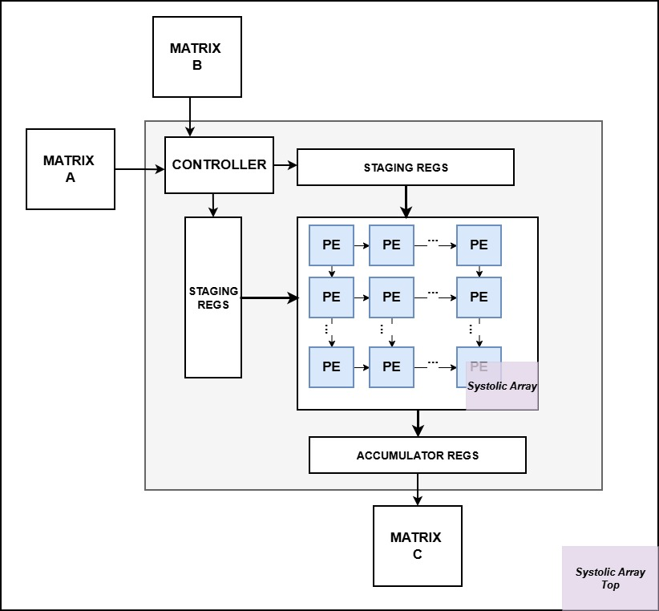
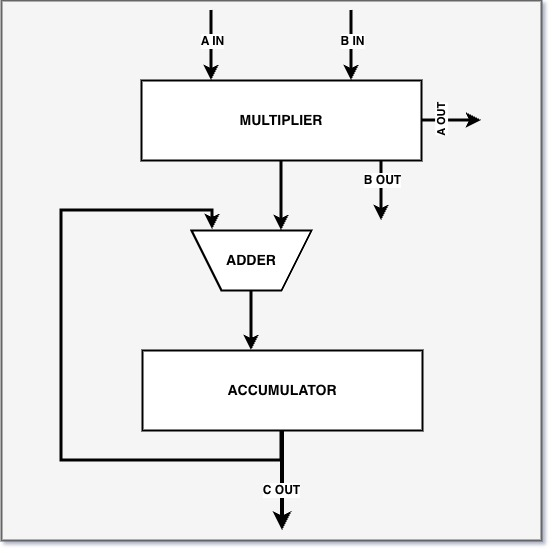

Systolic Array GEMM Accelerator
High Performance Hardware Accelerator for Matrix Multiplication
Abstract
I designed and implemented a 16×16 systolic array matrix multiplier in SystemVerilog. The design features 256 parallel processing elements (PEs) that compute 16×16 signed INT8 matrix multiplications with 32-bit accumulation. The accelerator achieves a compute phase latency of 920 ns @ 50 MHz, delivering 4.45 GMAC/s throughput and performing ~3,000x faster than naive Python and ~20x faster than naive C for the same operation.

High-level block diagram.
Project Goals
- Design a fully functional 16×16 systolic array with parallel processing elements
- Achieve verified correctness through comprehensive testing with identity matrices and random test vectors
- Optimize for minimal latency in the compute phase while maintaining clean synthesis
- Measure and document real hardware performance using SignalTap II Logic Analyzer
System Architecture
Processing Element (PE) Design

Each PE is a multiply-accumulate (MAC) unit that:- Receives signed INT8 inputs (a from west, b from north)
- Performs signed multiplication
- Accumulates products in a 32-bit register to prevent overflow
- Forwards inputs to adjacent PEs (a to east, b to south)
- Controlled by a global
processsignal for synchronized operation
Systolic Array (16×16 Mesh)
The 256 PEs are arranged in a 16×16 grid with:
- Wave-front propagation: Input data skewed by row/column for proper alignment
- Parallel execution: All 256 PEs compute simultaneously each cycle
- Efficient dataflow: Each element used exactly once, no redundant memory accesses
- Latency: 3N − 2 cycles, for an NxN matrix.
Control FSM
A finite state machine orchestrates the computation pipeline:
- IDLE: Waits for start signal from user
- LOAD_MATRICES: Reads 256 elements each from BRAM A and B into internal registers
- COMPUTE: Triggers systolic array computation
- STORE_RESULT: Writes 256 output elements to BRAM C
- Done signal: Indicates completion and readiness for next operation
Verification & Testing
Functional Verification
- Identity Matrix Test: A × I = A for all 256 elements
- Random Matrix Test: Compared against NumPy reference implementation
- Boundary Conditions: Tested diagonal elements, corners, and overflow scenarios
- Data Integrity: Verified row-major storage format and address decoding logic
Hardware Validation
- SignalTap II Logic Analyzer: Measured compute phase latency from
in_validtoout_valid - In-System Memory Content Editor: Loaded test matrices and read results in real-time
- FSM State Monitoring: Confirmed proper state transitions and cycle counts
- Synthesis Reports: Verified resource usage and timing constraints
Performance Comparison
| Implementation | Time | Speedup vs FPGA |
|---|---|---|
| This FPGA (50 MHz) | 920 ns | baseline |
| Python Naive Triple Loop | 2.7 ms | 2,985× slower |
| C Naive Loop | 20 µs | 22× slower |
| C Optimized | 2 µs | 2× slower |
Key Insights
- Massive Parallelism: 256 PEs executing simultaneously provides orders of magnitude speedup over sequential CPU code
- Deterministic Latency: Always exactly 46 cycles, no cache misses or branch mispredictions
- Scalability: The 16×16 array can serve as a compute tile for arbitrarily large matrices, enabling scalable GEMM with block partitioning.
Future Enhancements
- Matrix Tiling: Extend the 16×16 tile into a full GEMM engine by streaming block partitioned submatrices.
- Higher Numeric Precision: Support wider data formats (int16, fp16/bfloat16, configurable fixed-point) to target higher accuracy ML inference workloads.
- DMA Integration: Add a dedicated DMA engine for continuous A/B streaming and overlapped compute–load–store phases.